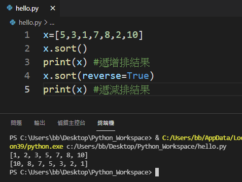
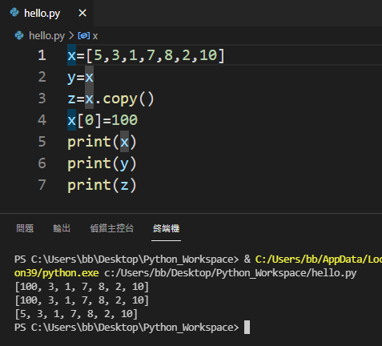

了解變數資料類型之後，接下來介紹資料類型對應操作，透過這些操作可加速程式開發，各項操作將依照資料類型進行介紹。
文字在Python以萬國碼(Unicode)方式儲存，儲存方式類似清單，因此可利用字元位置取得字串內容，同時支援 in 運算自，請注意字串長度函數為 len()。
文字類型可藉由 : 取得文字部分內容，切割方式包含 [:]、[開始位置:]、[:結束位置]、[開始位置:結束位置]、[開始位置:結束位置:間距值] ，分別代表 全部、開始位置之後、從頭到結束位置、開始到結束位置、開始到結束位置有間距。
文字類型修改函數包含 upper()、lower()、strip()、replace(原始字串,新字串,取代次數)、split(分割符號,分割次數) 等，分別代表 轉大寫、轉小寫、去掉頭尾空白、更換、分割，請注意字串分割函數會傳回字串清單，文字變數呼叫函數方式為 文字變數.函數()。
文字類型 format() 函數用於設定格式化輸出，輸出變數順序設定有三種：
"{}".format(輸出值)：其中"{}"代表順序對應輸出值，例如 print("南臺 {}, 資管 {}".format(1,2)) 會輸出 南臺 1, 資管 2
"{輸出值位置}".format(輸出值)：其中"{輸出值位置}"代表輸出值位置，透過這種方式不用像第一種順序輸出，使用者可以透過輸出值位置指定輸出值，請注意，起始位置從0開始，例如 print("南臺 {1}, 資管 {0}".format(1,2)) 會輸出 南臺 2, 資管 1
"{輸出變數名稱}".format(變數名稱)：透過這種方式指定變數輸出位置，例如 print("南臺 {x}, 資管 {y}".format(y=1,x=2)) 會輸出 南臺 2, 資管 1
設定輸出除指定輸出位置之外，另外可以指定輸出格式分別為：
"{:<位數}".format(輸出值)：其指定位數輸出並靠左，例如 print("{:<8}".format("abc")) 會輸出8字元長度並靠左abc
"{:>位數}".format(輸出值)：其指定位數輸出並靠右，例如 print("{:>8}".format("abc")) 會輸出8字元長度並靠右abc
"{:^位數}".format(輸出值)：其指定位數輸出並置中，例如 print("{:^8}".format("abc")) 會輸出8字元長度並置中abc
"{:+位數}".format(輸出值)：其指定位數輸出並對數字最左邊加上正負號，例如 print("{:=8}".format(123)) 會輸出8字元長度+123
"{:位數,}".format(輸出值)：對數字輸出位數長度三位加上一個逗點，例如 print("{:6,}".format(12345)) 會12,345
"{:位數d}".format(輸出值)：對數字輸出位數長度整數，例如 print("{:6d}".format(12345)) 會輸出 12345
"{:總位數.小數位f}".format(輸出值)：對符點數輸出總位數長度的小數位浮點數，例如 print("{:8.2f}".format(12345)) 會輸出12345.00
\
跳脫浮號 \n 代表跳行。
數字類型包含 int、float、complex，類型操作主要為類型轉換。
清單類型操作包含：
append(清單值)、insert(位置,清單值) 新增資料。
remove(清單值)、pop()、pop(位置值)、del 清單變數[位置值]、del 清單變數、清單變數.clear() 來刪除資料，分別代表 刪除清單值、刪除最後一個、刪除位置值清單項目、刪除位置值清單項目、移除整個清單變數、刪除清單變數內容(清單變數仍然存在)。
清單變數.sort()、清單變數.sort(reverse=True) 來進行清單遞增(由小到大)或遞減(由大到小)
排序。

清單變數.copy() 來進行清單複製，請不要用 新變數=原始清單變數 的方式進行清單複製，因為這種方式並不會將清單複製到新變數，而是將兩個變數只到相同的清單。
